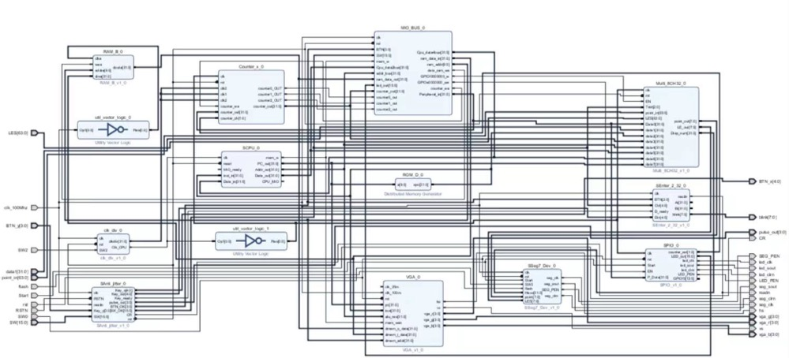
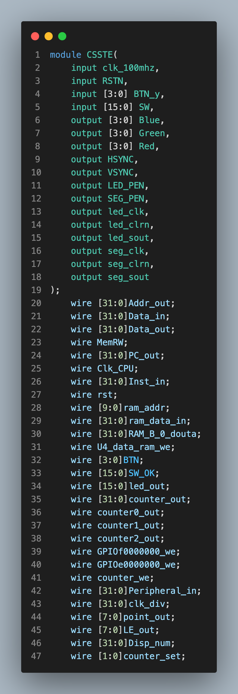
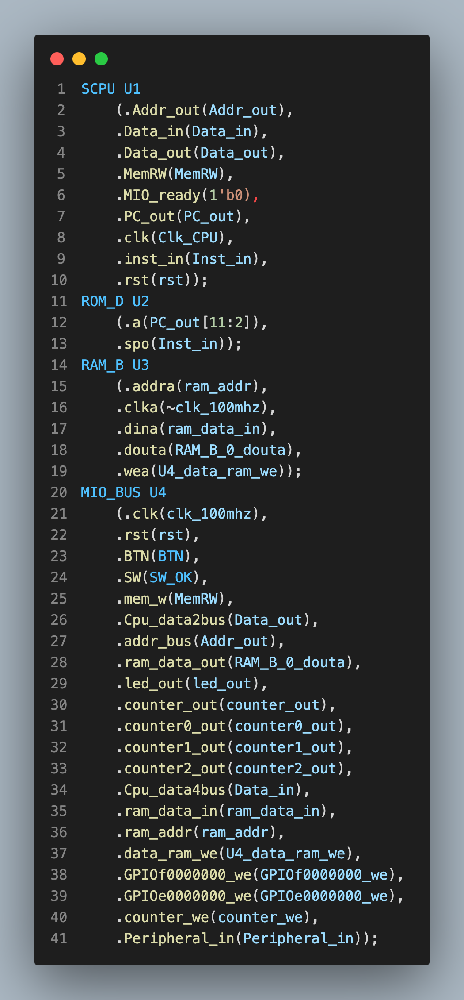
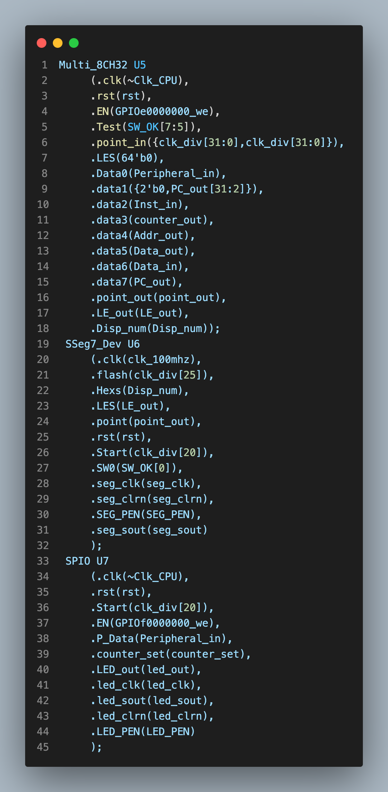
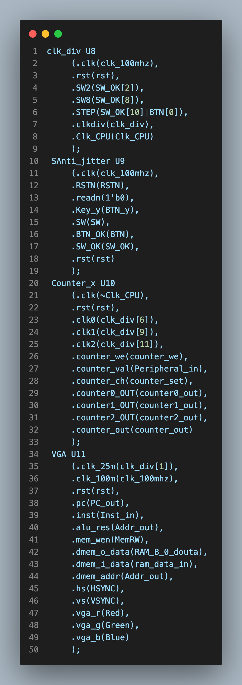
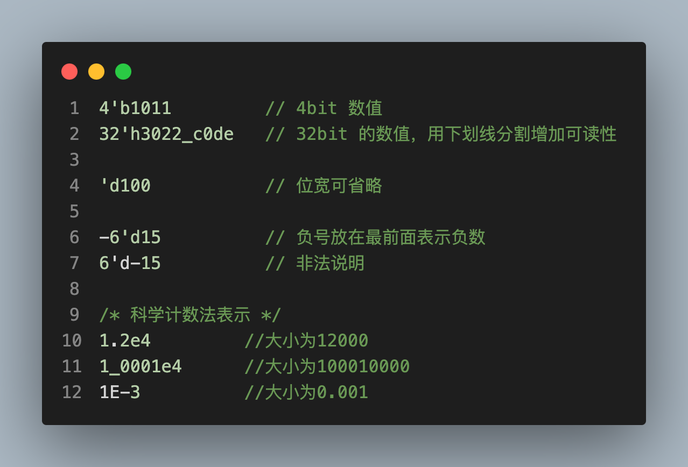
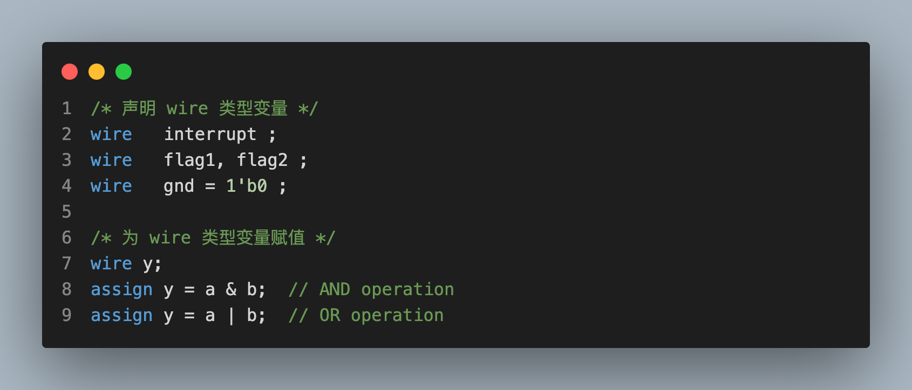
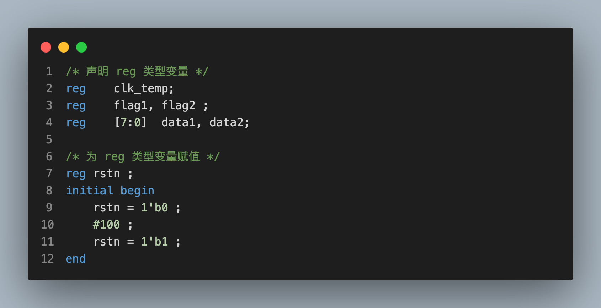
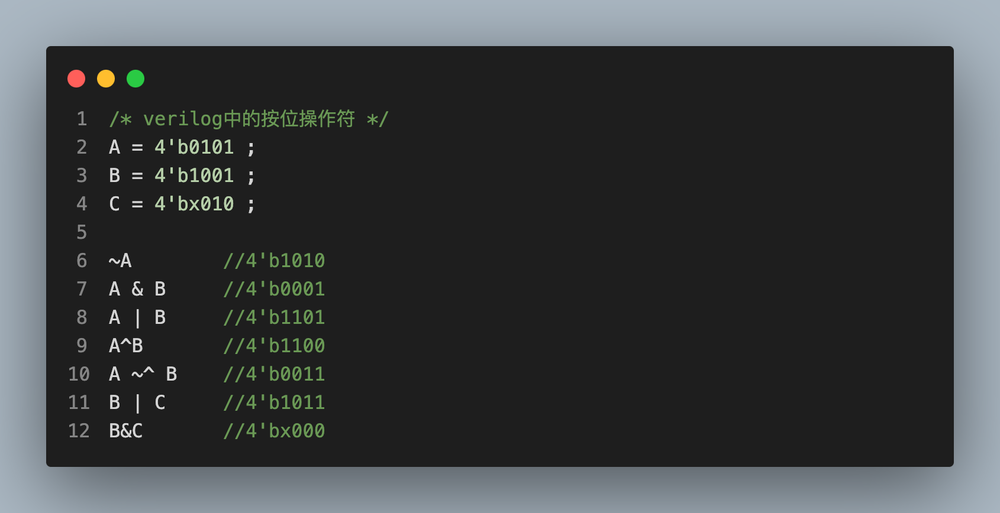
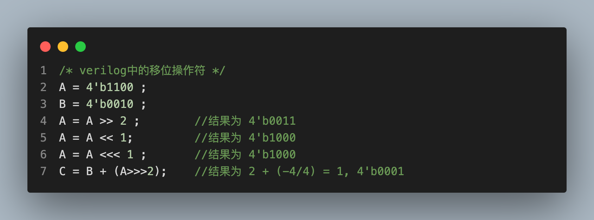

<!DOCTYPE html>
<html lang="en">
  <head>
    <meta charset="utf-8" />
    <meta name="viewport" content="width=device-width, initial-scale=1.0, maximum-scale=1.0, user-scalable=no" />

    <title>Number Systems and Boolean Algebra</title>
    <link rel="shortcut icon" href="./favicon.ico" />
    <link rel="stylesheet" href="./dist/reset.css" />
    <link rel="stylesheet" href="./dist/reveal.css" />
    <link rel="stylesheet" href="./dist/theme/serif.css" id="theme" />
    <link rel="stylesheet" href="./css/highlight/tomorrow-night-bright.css" />


  </head>
  <body>
    <div class="reveal">
      <div class="slides"><section  data-markdown><script type="text/template">

<link rel="stylesheet" href="custom.css">

# LCDF

<br>

## Week 3: Verilog

</script></section><section ><section data-markdown><script type="text/template">

## Part 1

## 为什么要使用Verilog?

</script></section><section data-markdown><script type="text/template">

### 设计硬件的两种方法

<br>

#### 方法一：原理图设计



</script></section><section data-markdown><script type="text/template">

### 设计硬件的两种方法 (cont.)

<br>

#### 方法二：硬件描述语言设计

<div style="display: flex;">    




</div>

</script></section></section><section ><section data-markdown><script type="text/template">

## Part 2

## Verilog语法

</script></section><section data-markdown><script type="text/template">

### Verilog基本书写格式


</script></section><section data-markdown><script type="text/template">

### Verilog中的数值表示



</script></section><section data-markdown><script type="text/template">

### Verilog中的数据类型

<br>

##### **线网(wire)**: **wire** 类型表示硬件单元之间的物理连线，它不存储任何值，只是表示信号之间的连线。**wire** 的值由其连接的元件（如门或模块输出）驱动。不能在过程块中为 **wire** 赋值，但可以通过连续赋值 (**assign** 语句) 或其它模块的输出来为其赋值。



</script></section><section data-markdown><script type="text/template">

### Verilog中的数据类型 (cont.)

<br>

##### **寄存器(reg)**: **reg** 类型用来表示存储单元，它会保持数据原有的值，直到被改写。在 Verilog 中，**reg** 类型的变量可以在过程块（如 **always** 或 **initial** 块）中被赋值。它会保存其值，直到下一次被赋新值。



</script></section><section data-markdown><script type="text/template">

### **reg** vs. **wire**

<br>

- **默认值**:
  - **reg**：默认情况下，没有明确初始化的 **reg** 类型的变量是“X”（未知）状态。
  - **wire**：除非有其他驱动，否则默认为“z”（高阻抗）状态。
- **赋值方式**:
  - **reg**：可以使用非阻塞赋值 (**<=**) 或阻塞赋值 (**=**) 在过程块内部赋值。
  - **wire**：只能通过连续赋值 (**assign**) 或其他模块的输出赋值。
- **扩展功能**:
  - **reg** 可以是标量、矢量、多维数组或是一个复杂的数据结构（例如队列、动态数组等）。
  - **wire** 可以是标量或矢量，但不能是多维数组或复杂数据结构。

</script></section><section data-markdown><script type="text/template">

### Verilog中的数据类型 (cont.)

<br>

##### **向量(vector)**: 当位宽大于 1 时，**wire** 或 **reg** 即可声明为向量的形式。例如：


</script></section><section data-markdown><script type="text/template">


</script></section><section data-markdown><script type="text/template">


</script></section><section data-markdown><script type="text/template">


</script></section><section data-markdown><script type="text/template">

### Verilog中的数据类型 (cont.)

<br>

##### **整数（integer)**: 整数类型用关键字 **integer** 来声明。声明时不用指明位宽，位宽和编译器有关，一般为32 bit。reg 型变量为无符号数，而 integer 型变量为有符号数。例如：


### Verilog中的数据类型 (cont.)

<br>

##### **参数(parameter)**: 参数用来表示常量，用关键字 **parameter** 声明，只能赋值一次。例如：


</script></section><section data-markdown><script type="text/template">

### Verilog中的表达式

##### 算术运算符


</script></section><section data-markdown><script type="text/template">

##### 关系运算符


</script></section><section data-markdown><script type="text/template">

##### 按位运算符



</script></section><section data-markdown><script type="text/template">

##### 移位运算符

</script></section></section></div>
    </div>

    <script src="./dist/reveal.js"></script>

    <script src="./plugin/markdown/markdown.js"></script>
    <script src="./plugin/highlight/highlight.js"></script>
    <script src="./plugin/zoom/zoom.js"></script>
    <script src="./plugin/notes/notes.js"></script>
    <script src="./plugin/math/math.js"></script>
    <script>
      function extend() {
        var target = {};
        for (var i = 0; i < arguments.length; i++) {
          var source = arguments[i];
          for (var key in source) {
            if (source.hasOwnProperty(key)) {
              target[key] = source[key];
            }
          }
        }
        return target;
      }

      // default options to init reveal.js
      var defaultOptions = {
        controls: true,
        progress: true,
        history: true,
        center: true,
        transition: 'default', // none/fade/slide/convex/concave/zoom
        slideNumber: true,
        plugins: [
          RevealMarkdown,
          RevealHighlight,
          RevealZoom,
          RevealNotes,
          RevealMath
        ]
      };

      // options from URL query string
      var queryOptions = Reveal().getQueryHash() || {};

      var options = extend(defaultOptions, {"width":1600,"height":900,"margin":0.04,"transition":"fade","slideNumber":true}, queryOptions);
    </script>


    <script>
      Reveal.initialize(options);
    </script>
  </body>
</html>
